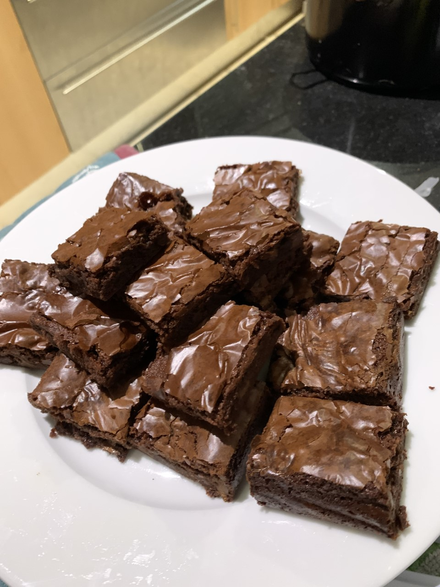

Delaney's Famous Brownies

Family recipe of the best brownies in the world!
You're about to be one of the very few people privileged enough
to have access to this brownie recipe that me and my husband
came up with (or almost).
This brownie is thin, chewy and you'll be dreaming
of it for days.
She beauty! *mwah*
And you definitely won't be finding this recipe
anywhere else on the internet!
Don't look on YouTube! It's definitely not there.
Ingredients
- 113g of butter, unsalted
- 50g of cocoa powder
- 396g of sweet condensed milk (a can)
- 120g of powdered sugar
- 2 tsp of vanilla extract
- A pinch of salt (only if you use unsalted butter)
- 1 egg yolk
- 90g of all-purpose flour
- 1 cup of chocolate chips (optional)
Steps
- Get your oven heating to 160°C.
- Line your pan with parchment paper (batter is very sticky) - I use a 23cm square pan.
- Put the butter in a mid-sized pot and heat over medium until it melts and the water boils out.
- Stir the butter as it starts to brown, to keep milk solids from sticking to the bottom.
- When the butter is browning and smelling like caramel, whisk in the cocoa powder.
- Let the cocoa powder boil for a minute then take the pot off the heat.
- Whisk in the sweet condensed milk, then the powdered sugar until it's fully dissolved.
- Whisk in the salt, vanilla extract and the egg yolk.
- Whisk in the flour.
- If you want to add the chocolate chips, let the batter cool down first or they'll melt.
- Get the batter in the pan and bake it for 30-40 minutes, until a toothpick comes out clean.
- Let it cool down completely before you cut it.
- Enjoy it! I also recommend adding a bit of the hot brownie to a plate with a scoop of ice cream! It's yummy!!